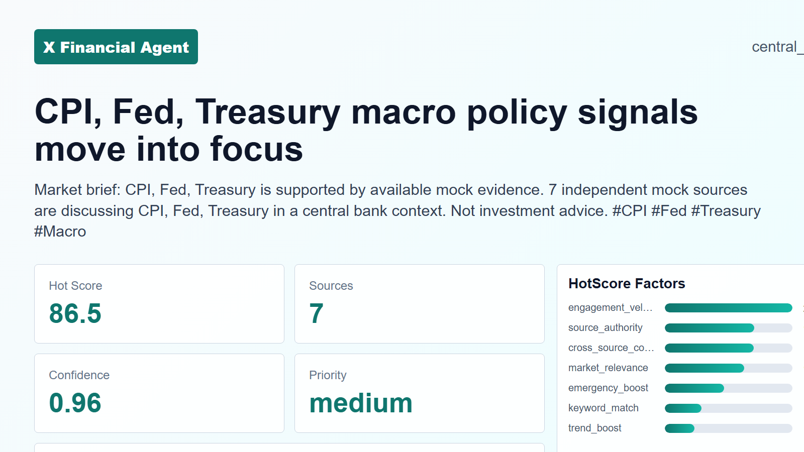
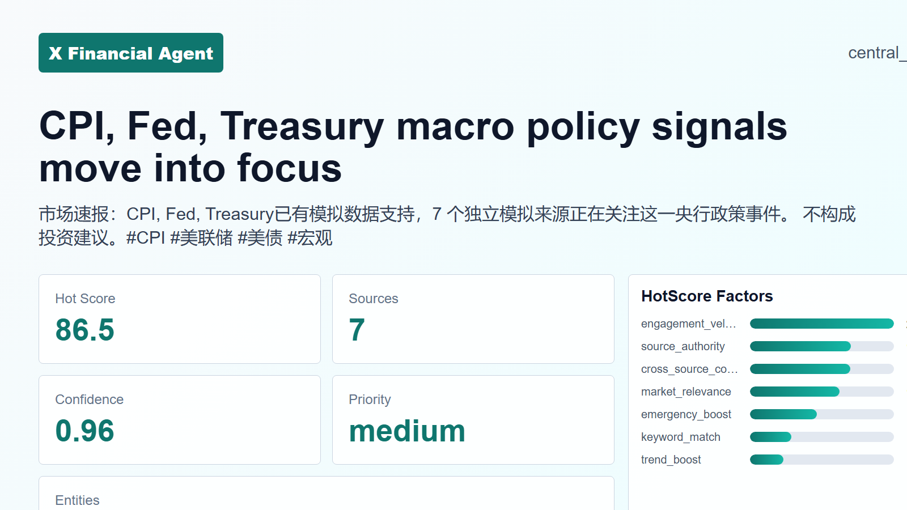
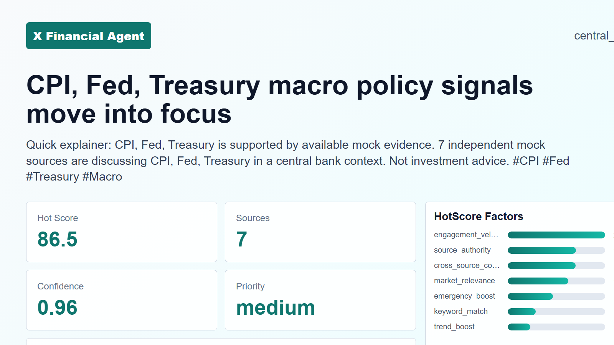
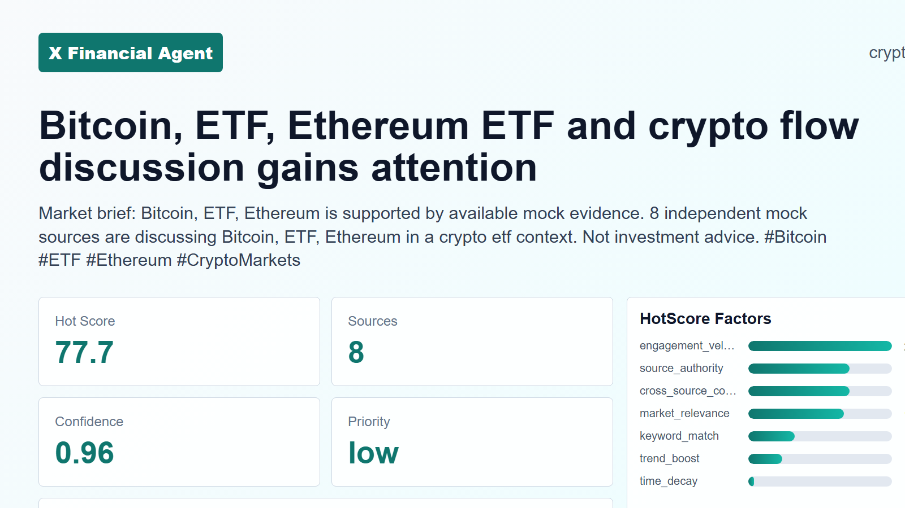
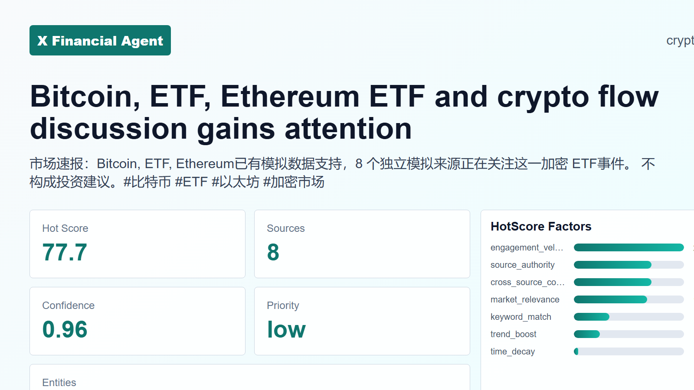

Submission Result
X 平台金融热点内容自动化运营系统
本报告由 outputs/state.json 自动生成，覆盖测试题核心能力、扩展能力、发布证据、A/B 实验和反馈闭环。
Assessment Mapping
core
数据采集
KOL、财经媒体、关键词与趋势话题采集，保留原始数据依据。
已完成
30 条证据
热点筛选
同事件聚类，输出 Top N、热度分数与 score_breakdown。
已完成
11 条证据
关键词与 Hashtag
实体抽取、Trending Topics 融合、3-5 个中英文 Hashtag。
已完成
8 条证据
内容生成
DeepSeek/规则兜底生成原创推文，满足 280 字符、核心信息、Hashtag 与免责声明。
已完成
8 条证据
配图生成
HTML/CSS 动态卡片模板生成 16:9 图片，包含标题、数据指标与品牌标识。
已完成
8 条证据
审核与发布
合规审核、人工审核队列、Mock X 发布链接、失败与频率控制。
已完成
6 条证据
Assessment Mapping
bonus
Agent 框架
10 个独立 Agent 模块、状态机编排、agent_manifest.yaml。
已完成
11 条证据
反馈闭环
发布后回收互动指标，更新 style/source/hashtag 策略权重。
已完成
6 条证据
多平台分发
Telegram Bot API 适配器 + Threads mock 适配器。
已完成
12 条证据
A/B 测试
A/B 变体分别发布、回收指标并标记 winner。
已完成
8 条证据
突发优先级
重大金融事件触发 emergency boost 与人工审核。
已完成
11 条证据
RAG 事实校验
MockFinanceDataClient，可选 CoinGecko/Yahoo Finance 外部事实源。
已完成
2 条证据
DeepSeek Evidence
LLM 调用结果
文案生成
- DeepSeek 生成6
- 规则兜底2
合规复核
- LLM + 规则7
- 纯规则1
LLM 错误
- timeout
- timeout
- timeout
Hotspot Ranking
Top 热点与评分依据
#1
CPI, Fed, Treasury macro policy signals move into focus
86.57 independent mock sources are discussing CPI, Fed, Treasury in a central bank context.
central_bank
7 sources
medium priority
CPI, Fed, Treasury
engagement_velocity21.5source_authority15.1cross_source_confirmation15market_relevance13.4keyword_match6.2trend_boost5.0time_decay0.3emergency_boost10
#2
BTC, Bitcoin, ETF ETF and crypto flow discussion gains attention
78.99 independent mock sources are discussing BTC, Bitcoin, ETF in a crypto etf context.
crypto_etf
9 sources
low priority
BTC, Bitcoin, ETF, Ethereum, US
engagement_velocity22.2source_authority15.3cross_source_confirmation15market_relevance14.2keyword_match6.9trend_boost5.0time_decay0.3emergency_boost0
#3
CFTC, SEC regulatory development becomes a hotspot
76.23 independent mock sources are discussing CFTC, SEC in a regulation context.
regulation
3 sources
high priority
CFTC, SEC
engagement_velocity18.9source_authority16.7cross_source_confirmation13.5market_relevance7.5keyword_match1.9trend_boost2.5time_decay0.3emergency_boost15
#4
AI, Apple, Microsoft earnings and guidance draw investor attention
66.54 independent mock sources are discussing AI, Apple, Microsoft in a earnings context.
earnings
4 sources
low priority
AI, Apple, Microsoft, NVDA, Nvidia
engagement_velocity20.5source_authority16.0cross_source_confirmation15market_relevance9.2keyword_match3.1trend_boost2.5time_decay0.3emergency_boost0
#5
Markets market move draws discussion
60.51 independent mock sources are discussing the topic in a market move context.
market_move
1 sources
high priority
engagement_velocity14.8source_authority18.0cross_source_confirmation4.5market_relevance6.7keyword_match1.2trend_boost0.0time_decay0.3emergency_boost15
#6
Tesla earnings and guidance draw investor attention
46.01 independent mock sources are discussing Tesla in a earnings context.
earnings
1 sources
low priority
Tesla
engagement_velocity13.8source_authority18.0cross_source_confirmation4.5market_relevance7.5keyword_match1.9trend_boost0.0time_decay0.3emergency_boost0
#7
Gold, Treasury macro data and yields drive discussion
41.11 independent mock sources are discussing Gold, Treasury in a macro data context.
macro_data
1 sources
low priority
Gold, Treasury
engagement_velocity13.3source_authority18.0cross_source_confirmation4.5market_relevance5.0keyword_match0.0trend_boost0.0time_decay0.3emergency_boost0
#8
Oil macro policy signals move into focus
40.41 independent mock sources are discussing Oil in a central bank context.
central_bank
1 sources
low priority
Oil
engagement_velocity12.7source_authority18.0cross_source_confirmation4.5market_relevance5.0keyword_match0.0trend_boost0.0time_decay0.3emergency_boost0
Generated Posts
生成文案与配图

en
professional_news
llm
ok
Multiple independent sources are tracking CPI, Fed, and Treasury developments as macro policy signals come into focus. Market attention centers on the interplay between inflation data, central bank posture, and fiscal dynamics. #CPI #Fed #Treasury #Macro Not investment advice.

zh
professional_news
llm
ok
市场焦点转向通胀数据、美联储信号及美债动向，多个独立信源正在追踪央行政策路径。 #CPI #美联储 #美债 #宏观 不构成投资建议。

en
educational
llm
ok
CPI data offers clues about inflation, while the Fed and Treasury shape policy responses. These signals can influence borrowing costs and market conditions. Not investment advice. #CPI #Fed #Treasury #Macro
zh
educational
llm
ok
市场关注的三大宏观信号——CPI、美联储政策预期与财政部发债节奏——正交织影响资金成本预期。理解它们的互动，有助于看清利率环境的逻辑。通胀数据引导加息终点猜想，联储表态塑造政策路径，国债供给量则传递财政立场。三者共同作用，构成大环境背景。 #CPI #美联储 #美债 #宏观 不构成投资建议。
en
commentary
rules_fallback
timeout
Market note: BTC, Bitcoin, ETF is supported by available mock evidence. 9 independent mock sources are discussing BTC, Bitcoin, ETF in a crypto etf context. Not investment advice. #BTC #Bitcoin #ETF #Ethereum #US
zh
commentary
llm
ok
关于#BTC 和 #以太坊 ETF资金流向的讨论正在升温，多个信源观察到这一趋势。美国市场的动态持续吸引眼球，但需冷静看待。这些更多是情绪的早期信号，而非趋势确认。#比特币 #ETF #US 不构成投资建议。

en
professional_news
rules_fallback
timeout
Market brief: BTC, Bitcoin, ETF is supported by available mock evidence. 9 independent mock sources are discussing BTC, Bitcoin, ETF in a crypto etf context. Not investment advice. #BTC #Bitcoin #ETF #Ethereum #US

zh
professional_news
llm
ok
近期市场关注点转向加密 ETF，多个独立消息源聚焦 BTC 与以太坊的讨论。美国市场相关动态引发对资金流向的广泛观察，目前大多信息已被交叉验证。 #BTC #比特币 #ETF #以太坊 #US 不构成投资建议。
Publishing Evidence
发布、A/B 与反馈闭环
Mock 发布记录
mock_post_001
published
Multiple independent sources are tracking CPI, Fed, and Treasury developments as macro policy signals come into focus. Market attention centers on the interplay between inflation data, central bank posture, and fiscal dynamics. #CPI #Fed #Treasury #Macro Not investment advice.
A
professional_news
cnt_evt_20260516_002_en
打开 Mock 链接
mock_post_002
published
市场焦点转向通胀数据、美联储信号及美债动向，多个独立信源正在追踪央行政策路径。 #CPI #美联储 #美债 #宏观 不构成投资建议。
A
professional_news
cnt_evt_20260516_002_zh
打开 Mock 链接
mock_post_003
published
CPI data offers clues about inflation, while the Fed and Treasury shape policy responses. These signals can influence borrowing costs and market conditions. Not investment advice. #CPI #Fed #Treasury #Macro
B
educational
cnt_evt_20260516_002_en_b
打开 Mock 链接
mock_post_004
published
市场关注的三大宏观信号——CPI、美联储政策预期与财政部发债节奏——正交织影响资金成本预期。理解它们的互动，有助于看清利率环境的逻辑。通胀数据引导加息终点猜想，联储表态塑造政策路径，国债供给量则传递财政立场。三者共同作用，构成大环境背景。 #CPI #美联储 #美债 #宏观 不构成投资建议。
B
educational
cnt_evt_20260516_002_zh_b
打开 Mock 链接
mock_post_005
published
Market note: BTC, Bitcoin, ETF is supported by available mock evidence. 9 independent mock sources are discussing BTC, Bitcoin, ETF in a crypto etf context. Not investment advice. #BTC #Bitcoin #ETF #Ethereum #US
A
commentary
cnt_evt_20260516_001_en
打开 Mock 链接
mock_post_006
published
关于#BTC 和 #以太坊 ETF资金流向的讨论正在升温，多个信源观察到这一趋势。美国市场的动态持续吸引眼球，但需冷静看待。这些更多是情绪的早期信号，而非趋势确认。#比特币 #ETF #US 不构成投资建议。
A
commentary
cnt_evt_20260516_001_zh
打开 Mock 链接
A/B 测试
ab_evt_20260516_002
- A / professional_news 1.39% winner
- B / educational 1.35%
ab_evt_20260516_002_zh
- A / professional_news 2.58% winner
- B / educational 1.41%
ab_evt_20260516_001
- A / commentary 2.20% winner
- B / professional_news 0.00%
ab_evt_20260516_001_zh
- A / commentary 2.14% winner
- B / professional_news 0.00%
策略记忆与反馈指标
已回收 6 条互动指标。
Style Weight
- educational1.091
- professional_news1.089
- commentary1.078
Source Weight
- evt_20260516_0021.06
- evt_20260516_0011.026
Hashtag Weight
- #CPI1.089
- #美联储1.048
- #美债1.048
- #宏观1.048
- #Fed1.041
- #Treasury1.041
Artifacts